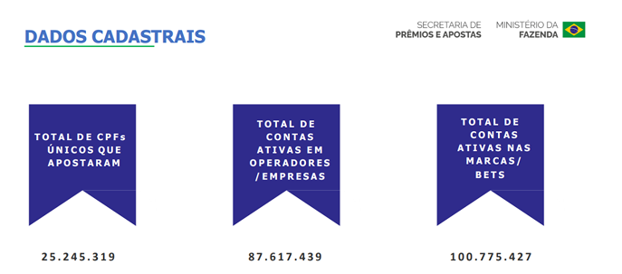
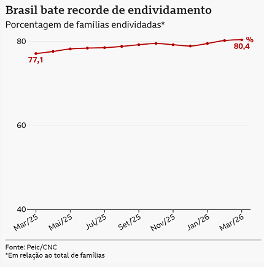

É preciso olhar para além do clique.
Em março de 2024, a história do jovem Rafael Borges chocou o país e trouxe à tona a face mais dolorosa do avanço das apostas virtuais. O impacto do endividamento decorrente dos jogos online reflete uma crise sociocultural e econômica que atinge milhares de brasileiros. Esse cenário nocivo se perpetua no país impulsionado por dois pilares interdependentes: o aprendizado social que estimula o vício e, como consequência direta, o endividamento financeiro que destrói famílias. Desse modo, torna-se imperioso analisar essas vertentes para combater essa epidemia silenciosa e garantir a dignidade humana.
Em primeira análise, o estímulo ao jogo promovido pela mídia e pelas redes sociais funciona como a raiz ideológica do problema. De acordo com o psicólogo Albert Bandura (responsável por estruturar a teoria do aprendizado social), o comportamento é cultivado por meio de observações e reforços diários, como o convívio com familiares, a ostentação de influenciadores digitais e as ilusórias vitórias nas primeiras rodadas. No Brasil contemporâneo, o pensamento de Bandura se materializa na tendência coletiva de enxergar a aposta como uma atividade inofensiva e sob controle. Essa percepção equivocada mascara os sinais do vício e dificulta a busca por ajuda. Assim, a falta de conscientização unida ao bombardeio publicitário torna o ciclo dos jogos cada vez mais perigoso.
Ademais, esse reforço comportamental encontra seu desdobramento prático no severo endividamento pessoal e familiar. Relatórios do Banco Central do Brasil estimam que as apostas virtuais tenham retirado mais de R$ 100 bilhões da economia das famílias brasileiras. A dinâmica financeira evidencia impactos profundos no orçamento doméstico: muito além da perda financeira imediata, o acesso facilitado a jogos de azar alimenta um ciclo de desesperança e dependência. Seja nas apostas virtuais ou em modalidades tradicionais, como o jogo do bicho e loterias, a promessa do ganho rápido aprisiona parcelas vulneráveis da população em uma espiral de endividamento.
Falar sobre as apostas online é trazer um olhar aprofundado para todo o tipo de vício em aposta, ilegal ou não, vigente no sistema brasileiro. Para uma população rural ou com pouco acesso à internet é possível entrar no caminho do vício por meio do popular “jogo do bicho”, máquinas caça-níqueis ou mesmo apostas financiadas por governos como a Mega-Sena, cujos sorteios são televisionados nas maiores emissoras.
Portanto, embora existam marcos regulatórios e programas de renegociação de dívidas, faz-se urgente uma ação integrada que envolva a saúde pública e a educação preventiva. Para tanto, o Ministério da Saúde, em cooperação com as Redes de Atenção Psicossocial (RAPS) e o Ministério da Educação, deve instituir um Plano Nacional de Enfrentamento ao Vício em Apostas. Essa medida será operacionalizada por meio da ampliação do atendimento terapêutico na rede pública e da realização de palestras educativas em escolas e comunidades, com o detalhamento de orientações prestadas por psicólogos e especialistas sobre os riscos dos jogos. Essa estratégia terá como finalidade mitigar a influência social denunciada e acolher as vítimas do endividamento. Somente assim o Brasil garantirá a dignidade humana e protegerá seus cidadãos da armadilha das apostas.
O preço da sorte: quando apostar custa mais do que dinheiro
Basta um clique, alguns reais e a esperança de mudar de vida. Para Émile Durkheim, períodos de transformação e instabilidade podem provocar anomia, situação em que normas e referências sociais perdem parte de sua força reguladora. Em um país marcado pela desigualdade, pelo endividamento e pelas dificuldades financeiras, essa fragilidade pode contribuir para que promessas de enriquecimento rápido, como as oferecidas pelas bets, se tornem mais atraentes para parte da população.
Somente em 2025, mais de 25 milhões de brasileiros realizaram apostas no mercado regulamentado, segundo dados da Secretaria de Prêmios e Apostas do Ministério da Fazenda. No mesmo ano, estima-se que as famílias brasileiras tenham perdido aproximadamente R$ 62,5 bilhões líquidos para as plataformas, enquanto a receita bruta das operadoras regulamentadas alcançou cerca de R$ 37 bilhões. Os números revelam a dimensão de um mercado que cresce enquanto parte da população enfrenta dificuldades para equilibrar o próprio orçamento.
Entretanto, por trás das telas coloridas, dos anúncios de influenciadores e das histórias de supostos vencedores, existe uma realidade muito diferente. Uma pesquisa do Procon-SP, realizada entre 2025 e 2026, revelou que 68,73% dos apostadores entrevistados perderam mais dinheiro do que ganharam, enquanto 39,72% declararam possuir dívidas diretamente relacionadas aos jogos. Embora esses resultados não representem toda a população brasileira, eles evidenciam os riscos de uma atividade frequentemente apresentada como uma oportunidade financeira.


Histórias como as de Nicolas, uma jovem que viu seu casamento e sua estabilidade financeira serem comprometidos pelo vício, e de Rafael Borges Amaral, cuja trajetória foi marcada por perdas, isolamento e um desfecho trágico, mostram que as consequências das apostas ultrapassam o dinheiro. São vidas reais afetadas por um problema que envolve não apenas escolhas individuais, mas também vulnerabilidade econômica, mecanismos psicológicos e a influência de uma publicidade cada vez mais presente.
Os impactos também alcançam a economia brasileira. Estimativas do Made/FEA-USP apontam que as bets podem ter reduzido a atividade econômica do país em até R$ 141 bilhões em 2025, considerando os efeitos sobre o consumo e outros setores produtivos. Ao mesmo tempo, o crescimento desse mercado levanta questionamentos sobre a concentração de renda, os limites da regulamentação e a responsabilidade das empresas e do poder público.
Mas como uma atividade apresentada como entretenimento pode se transformar em um ciclo de dependência e endividamento? Por que a promessa de dinheiro fácil se torna tão atraente em momentos de dificuldade econômica? Quem realmente lucra com esse mercado? E até que ponto a sociedade está preparada para enfrentar suas consequências?
Afinal, quando milhões apostam na esperança de mudar de vida, é preciso questionar quem realmente está ganhando e qual é o preço pago por aqueles que perdem.